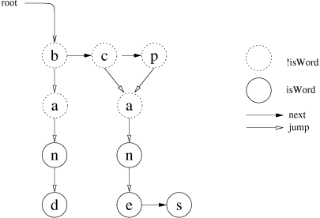

|
Home · All Namespaces · All Classes · Grouped Classes · Modules · Functions | |
The QDawg class provides storage of words in a Directed Acyclic Word Graph. More...
#include <QDawg>
The QDawg class provides storage of words in a Directed Acyclic Word Graph.
A DAWG provides very fast look-up of words in a word list given incomplete or ambiguous letters in those words.
In Qtopia, global DAWGs are maintained for the current locale. See Qtopia::dawg(). Various Qt Extended components use these DAWGs, most notably input methods, such as handwriting recognition that use the word lists to choose among the likely interpretations of the user input.
To create your own a QDawg, construct an empty one with the default constructor, then add all the required words to it by a single call to createFromWords().
Created QDawgs can be stored with write() and retrieved with read() or readFile().
The data structure is such that adding words incrementally is not an efficient operation and can only be done by creating a new QDawg, using allWords() to get the existing words.
The structure of a DAWG is a graph of Nodes, each representing a letter (retrieved by QDawg::Node::letter()). Paths through the graph represent partial or whole words. Nodes on paths that are whole words are flagged as such by QDawg::Node::isWord(). Nodes are connected to a list of other nodes. The alphabetically first such node is retrieved by QDawg::Node::jump() and subsequent nodes are retrieved from the earlier by QDawg::Node::next(), with the last child returning 0 for that (and false for QDawg::Node::isLast()).
There are no cycles in the graph as there are no inifinitely repeating words.
For example, the DAWG below represents the word list: ban, band, can, cane, cans, pan, pane, pans.

In the graph above, the root() node has the letter 'b', the root()->jump() node has the letter 'a', and the root()->next() node has the letter 'c'. Also, the root() node is not a word - !Node::isWord(), but root()->next()->jump()->jump() is a word (the word "can").
This structuring not only provides O(1) look-up of words in the word list, but also produces a smaller compressed storage file than a plain text file word list.
A simple algorithm that traverses the QDawg to see if a word is included would be:
bool isWord(const QDawg::Node *n, const QString& s, int index)
{
int i=0;
if ( index < (int)s.length() ) {
while (n) {
if ( s[index] == n->letter() ) {
if ( n->isWord() && index == (int)s.length()-1 )
return true;
return isWord(n->jump(),s,index+1);
}
n = n->next();
}
}
return false;
}
In addition to simple look-up of a single word, the QDawg can be traversed to find lists of words with certain sets of characters, such as the characters associated with phone keys or handwriting. For example, given a QStringList where each string is a list of letter in decreasing order of likelihood, an efficient algorithm could be written for finding the best word by traversing the QDawg just once.
The QDawg graph can have a value() stored at each node. This can be used for example for tagging words with frequency information.
Constructs a new empty QDawg. The next step is usually to add all words with createFromWords() or use readFile() to retrieve existing words.
Destroys the QDawg. If it was attached to a file with readFile(), it is detached.
Returns a list of all the words in the QDawg, in alphabetical order.
Returns true if the QDawg contains the word s; otherwise returns false.
Iterates over the whole graph and returns the total number of words found in the QDawg.
Replaces all the words in the QDawg with the words in the list.
In addition to single words, QDawg also allows prefixes and node values.
Prefixes are described by words with a trailing "*"; any necessary nodes are added to the QDawg, but the final node is not marks as isWord().
Node values are integers appended to the word (or prefix) following a space. The values are accessible via the value() function. The value must be in the range 0 to QDawg::Node::MaxValue.
Note that storing a wide range of values will increase the size of the generated dawg since suffixes with different values cannot be merged.
This is an overloaded member function, provided for convenience.
Replaces all the words in the QDawg with words read by QIODevice::readLine() from dev. The text in dev must be in UTF8 format.
Replaces all the words in the QDawg with the QDawg read from dev. The file is not memory-mapped. Use readFile() wherever possible, for better performance.
Returns true if successful. If not successful, the QDawg is left unchanged and false is returned.
See also write().
Replaces all the words in the QDawg with the QDawg in filename. Note that the file is memory-mapped if possible.
Returns true if successful. If not successful, the QDawg is left unchanged and false is returned.
See also write().
Returns the root Node of the QDawg, or 0 if the QDawg is empty.
The root is the starting point for all traversals.
Note that this root node has a Node::letter(), and subsequent nodes returned by Node::next(), just like any other Node.
Writes the QDawg to dev, in a custom QDAWG format.
Returns true if successful.
Warning: QDawg memory maps QDAWG files. The safe method for writing to QDAWG files is to write the data to a new file and move the new file to the old file name. QDawg objects using the old file will continue using that file.
Writes the QDawg to dev, in a custom QDAWG format, with bytes reversed from the endianness of the host. This allows a host of one endianness to write a QDAWG file readable on a target device with reverse endianness.
Returns true if successful.
| Copyright © 2009 Trolltech | Trademarks | Qt Extended 4.4.3 |